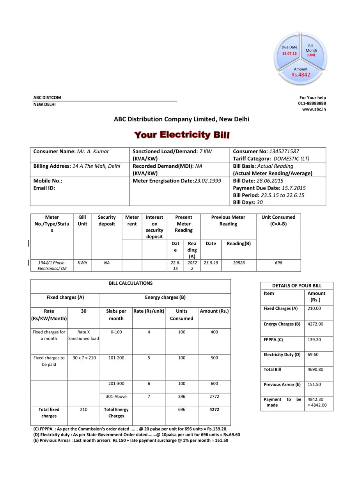

Crash-safe coordination for model-driven pipelines on shared GPU clusters
PatramBench · Patram-Eval
Patram Suite
Patram-Core
Patram-Ingest · this talk
Patram-Scraper · Synthetic docs
DarshinAI
Patram-FS · Patram-DB
Patram series
Patram-GrounderPatram-LayoutPatram-CoT
PatramParse
One data-generation run takes weeks, and must not stop.

The run has to recover on its own: notice, restart what died and continue, with nobody watching.
GPUs are lent to other jobs for a while. When they return, the run has to use them again without a restart.
Complex workloads need pipeline parallelism: every stage running at once, split across nodes.
The GPUs are the expensive part. They should never wait for anything.
Nodes die, GPUs come and go. Every record is still written exactly once.
A new pipeline should take a few lines of code to define, and one command to run on every node.
build the prompt
read and check the image
the only step the GPU does
parse and validate
write to disk, record progress
Simple, and self-balancing: a fast worker pulls more often.
A killed process runs no cleanup, so it never lets go. Every other worker waits forever.
No error and no timeout. Throughput is zero.
Only the dispatcher touches the shared queue, and it is a thread that does not get killed on its own.
It can only block its own inbox, which is thrown away. The dispatcher stops sending to it. The others keep working.
The supervisor starts a new worker with a fresh inbox. Its unfinished requests are sent again.
Shared vLLM servers, called over HTTP. The node itself needs no GPU.
Any model loaded on this node’s own GPU.
Rendering pages in a headless browser, image processing.
SAM3, YOLO and other detectors and segmenters.
init()·call(request)·terminate()
build the request
on the GPU
validate the answer
written and forced to disk
one row in the database
The database still says not done, so the sample goes back in the queue and is done again. Anything half-saved is thrown away. At most one small group of results is ever redone.
Never redone. Its result is already on disk.
A process or node dies. It is restarted, and its work is not lost.
GPUs come and go. The run adjusts without a restart.
Each stage names its inputs. The engine works out the rest.
A retry is a bounded decision in a routing function, never a cycle.
Each sample’s path depends on what earlier stages found in it.
Name the stages and say which feed which.
The prompt, and what a good answer looks like.
The same command on every machine. After any failure, run it again.
Also survive crashes. Past a few nodes, the database becomes the limit.
Keeps growing with every node. The database stays mostly idle.
Why: the database holds only small state rows. Results go to files on each node.
Over weeks, every step crashes midway at some point. Design each step for it.
Each component does one job. A stage only transforms a sample; retries, coordination and scaling live in the engine.
Every error ends somewhere: retried, or set aside with a reason. Nothing stays stuck.
A killed process cannot release a lock. So workers share no locks: each has its own inbox.
Processes compute, threads wait, event loops juggle calls.
The database holds only state. Results go to files, written in groups.
PatramBench · Patram-Eval
Patram Suite
Patram-Core
Patram-Ingest · this talk
Patram-Scraper · Synthetic docs
DarshinAI
Patram-FS · Patram-DB
Our models are internal today. We plan to release the Patram series soon.
Sign up to be notified when it is released.
a separate service remembers every page and tells boxes when to start
If it crashes, everything it knew is gone. And it is one more thing to keep alive.“I’m done with page 4812” → “so am I, start it”
A crash loses a message, or a retry repeats it: page lost, or done twice.each machine notes what it finished there; a small check reads it
No new service: the database already holds every sample and survives crashes. ✓ This is what we do.Use the database for coordination across nodes and across stages.
Crashes at any moment, no messages between machines, every stage exactly once, still fast at 32 nodes.